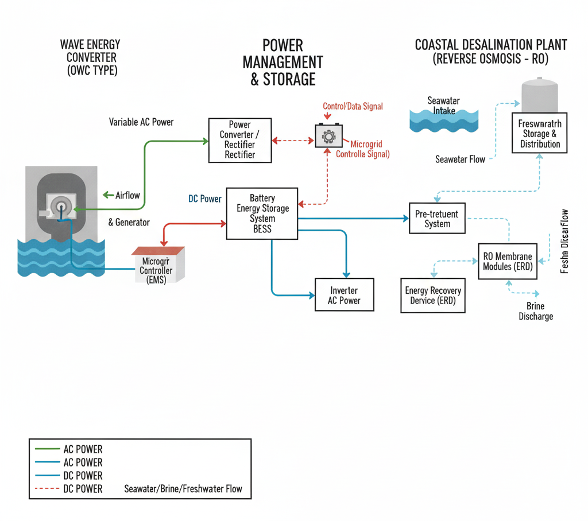
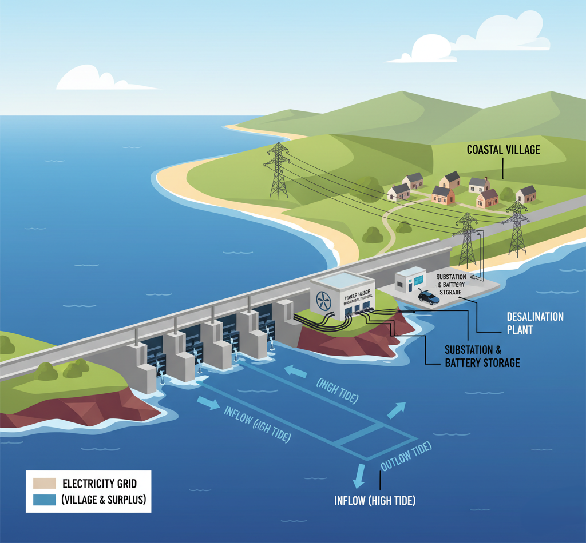

🌊 Activity 1 – Wave Energy Conversion System for Coastal Desalination
Explanation: This block diagram illustrates how an OWC wave energy converter generates power, which is then used to drive a reverse osmosis (RO) desalination plant.
1. Wave Energy Converter (OWC Type) This is the system that captures the kinetic and potential energy from ocean waves. OWC Chamber: Function: A hollow structure open to the sea below the waterline, trapping a column of air above the water. Process: As waves move up and down inside the chamber, the water column oscillates, compressing and decompressing the air within the chamber.Air Turbine (Wells Turbine or similar):
Function: Converts the bidirectional airflow from the OWC chamber into unidirectional mechanical rotation. Process: The compressed air drives the turbine. Generator: Function: Converts the mechanical rotation of the air turbine into Electricity. Output: Variable AC power, depending on wave conditions. 2. Power Conditioning and Storage Given the intermittent nature of wave energy, energy storage and stable power delivery are crucial for a desalination plant. Power Converter / Rectifier: Function: Converts the variable AC power from the generator into stable DC power for battery charging and potentially directly powering some loads. Battery Energy Storage System (BESS): Function: Stores surplus electricity from the wave converter during high wave activity and discharges it during low wave activity or peak demand. Ensures a continuous power supply to the desalination plant. Inverter: Function: Converts DC power from the battery bank into stable AC power required by the desalination plant's pumps and control systems. 3. Coastal Desalination Plant (Reverse Osmosis - RO) This section uses the stable electricity supplied by the WEC system to produce freshwater. Seawater Intake: Function: Pumps raw seawater from the ocean. Pre-treatment System: Function: Filters and treats the raw seawater to remove suspended solids, algae, and other impurities that could damage the RO membranes. Components: Screens, sand filters, cartridge filters, chemical dosing. High-Pressure Pump(s): Function: The primary energy consumer in RO. Pumps the pre-treated seawater at very high pressure (typically 50-80 bar) to overcome osmotic pressure. Power Source: Driven by electricity from the WEC system (via the inverter/BESS). RO Membrane Modules: Function: Semipermeable membranes through which water is forced under high pressure, leaving dissolved salts behind. Energy Recovery Device (ERD ): Function: Captures hydraulic energy from the high-pressure brine (reject water) and transfers it to the incoming seawater, significantly reducing the overall energy consumption of the RO process. Post-treatment System: Function: Treats the desalinated water (permeate) to adjust pH, add minerals, and disinfect it for drinking water standards. Freshwater Storage & Distribution: Function: Stores the potable water before it is distributed to the community. Brine Discharge: Function: Discharges the concentrated saltwater (brine) back into the ocean, carefully managed to minimize environmental impact.  The core system, likely an Oscillating Water Column (OWC) structure placed near the shore, captures the vertical movement of waves. This motion drives air through a turbine, generating electricity . This power is then sent to a coastal facility housing the Reverse Osmosis (RO) Desalination Plant. Because wave power is intermittent, a Battery Energy Storage System (BESS) is integrated to stabilize the electrical supply. The reliable, wave-generated power drives the RO plant's high-pressure pumps. These pumps force seawater through membranes to separate salt, producing potable freshwater for the nearby community. The brine is safely discharged, and the clean water is sent to storage and distribution. This setup offers a resilient, zero-emission solution for energy and water scarcity in remote coastal areas.Wave energy is derived from the kinetic and potential energy present in ocean surface waves, which are generated primarily by wind blowing over the sea surface. The continuous motion of waves makes this a reliable and renewable energy source along coastal regions. The energy density of waves is high compared to other renewable sources, making it suitable for coastal industrial applications like desalination.
Conversion Process
Wave Capture: Floating or oscillating devices (like point absorbers, oscillating water columns, or overtopping devices) capture the motion of the waves.
Energy Conversion:
The mechanical energy from wave motion is converted into rotational motion using hydraulic systems or air turbines.
This mechanical energy then drives a generator to produce electricity.
Alternatively, the mechanical motion can directly power high-pressure pumps used in reverse osmosis desalination systems.
Power Management: The generated electricity or hydraulic pressure is conditioned and regulated for stable operation of desalination units.
Output / Utilization
Electricity Production: Powers the desalination plant’s pumps, membranes, and control systems.
Direct Mechanical Drive: Wave motion can directly drive the seawater intake and high-pressure pumps without converting to electricity first, improving efficiency.
Freshwater Production: The generated power runs reverse osmosis or multi-effect distillation systems, producing potable water for coastal communities.
Real-world Application Relevance
Sustainable Desalination: Integrating wave energy with desalination plants reduces dependence on fossil fuels, lowering both operating costs and carbon emissions.
Ideal for Remote Coasts & Islands: Locations with strong wave action but limited grid access benefit from this self-sufficient system.
Example Projects:
Carnegie Clean Energy’s CETO System (Australia) uses submerged buoys to generate power and directly drive desalination pumps.
Wave2O Project (Cape Verde) produces off-grid freshwater using only wave energy.